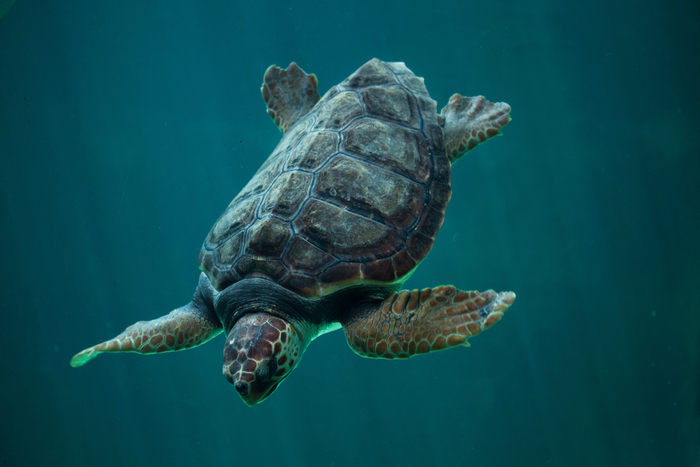
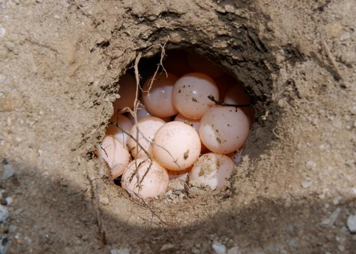
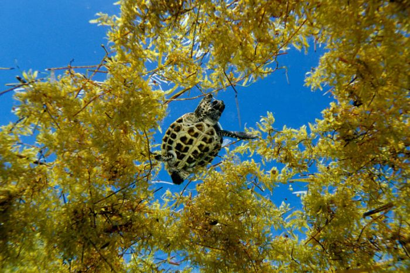

Caratteristiche fisiche
La Caretta caretta è riconoscibile per il suo carapace robusto a forma di cuore,
di colore marrone-rossastro. La testa è grande rispetto al corpo, con mascelle potenti adatte a
frantumare i gusci dei crostacei.

Caretta Caretta adulta che nuota in profondità | Crediti Shutterstock
Distribuzione
Frequenta mari temperati, subtropicali e tropicali di tutto il mondo. Nel Mediterraneo, l'Italia
è uno dei principali siti di nidificazione, con oltre 80 nidi segnalati annualmente lungo le
coste siciliane, calabresi e pugliesi.

Sito di nidificazione, le loro uova si schiudono sulle spiagge
sabbiose. | Crediti Shutterstock
Alimentazione
Principalmente carnivora, si nutre di meduse, crostacei, molluschi e pesci. I piccoli consumano
plancton e organismi galleggianti durante le loro lunghe migrazioni oceaniche.

Tra le alghe Sargassi trovano rifugio tante creature marine, tra le
quali, tantissime tartarughe. | Crediti Ipa Agency
 Biologia & Habitat
Biologia & Habitat Habitat preferito
Habitat preferito